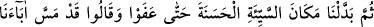
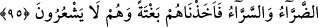

100. Önceki sahiplerinden sonra yeryüzüne vâris olanlara hâla şu gerçek belli
olmadı mı ki: Eğer biz dileseydik onları da günahlarından dolayı musibetlere
uğratırdık! Biz onların kalplerini mühürleriz de onlar (gerçekleri) işitmezler.
101. İşte o ülkeler... Onların haberlerinden bir kısmını sana anlatıyoruz. Andolsun
ki, peygamberleri onlara apaçık deliller getirmişlerdi. Fakat önceden yalanladıkları
gerçeklere iman edecek değillerdi. İşte kâfirlerin kalplerini Allah böyle mühürler.
102. Onların çoğunda, sözünde durma diye bir şey bulamadık. Gerçek şu ki,
onların çoğunu yoldan çıkmış bulduk.
“Biz hangi ülkeye” şehre veya beldeye “bir peygamber gönderdiysek, onun”
peygamberi yalanlayan “halkını yalvarıp yakarsınlar diye mutlaka yoksulluk ve
darlıkla sıkmışızdır.” Biz, helâk edilen ülkelerden hangisine, kendisine inanılmayıp
yalanlanan bir peygamber göndermişsek, onun halkını sıkıntı, yoksulluk, darlık ve
hastalıkla sıkmışızdır.
Allah Teâlâ, onları, kibir ve gururu omuzlarından indirip kendisine boyun eğerek
yalvarmaları için fakirlik ve yoksulluk içinde bırakmış, hastalık, zarar ve ziyana
uğratmıştır. Çünkü sıkıntı, özellikle açlık, insanların çoğunun boyun büküp tevazu
göstermesine sebep olur.
Zemahşerî’nin beliğ sözlerinden biri de şudur: Hastalık ve ihtiyaç, pek acı olan Ebû
Cehil karpuzunun iki yaprağından daha acıdır.
Bu yoksulluk ve darlık, peygamber gönderilir gönderilmez meydana gelmemiştir;
aksine peygamberlerine tâbî olmak hususunda büyüklük tasladıkları ve kendilerini
ondan üstün gördükleri için tebliğin peşinden meydana gelmiş ve onlardan
ayrılmamıştır.
95. Sonra kötülüğü (darlığı) değiştirip yerine iyilik (bolluk) getirdik. Nihayet
çoğaldılar ve: “Atalarımız da böyle sıkıntı ve sevinç yaşamışlardı” dediler. Biz de
onları, kendileri farkına varmadan ansızın yakaladık.
“Sonra” onların başına gelen “kötülüğü değiştirip” içinde bulundukları bela ve
mihnetin “yerine iyilik” rahatlık ve genişlik “getirdik de” sayı ve techizat bakımından
“çoğaldılar” ve nimet onları şımarttı. Çünkü sıkıntıdan sonra nimetin gelmesi, boyun
eğmeye ve şükretmeye vesile olur.
Ayette sıkıntı, kötülük (seyyie) diye isimlendirilmiştir. Çünkü sıkıntı, insana kötü
gelir. İnsan üzerinde iyi bir tesir bıraktığı için de bolluk ve saadete, iyilik (hasene) ismi